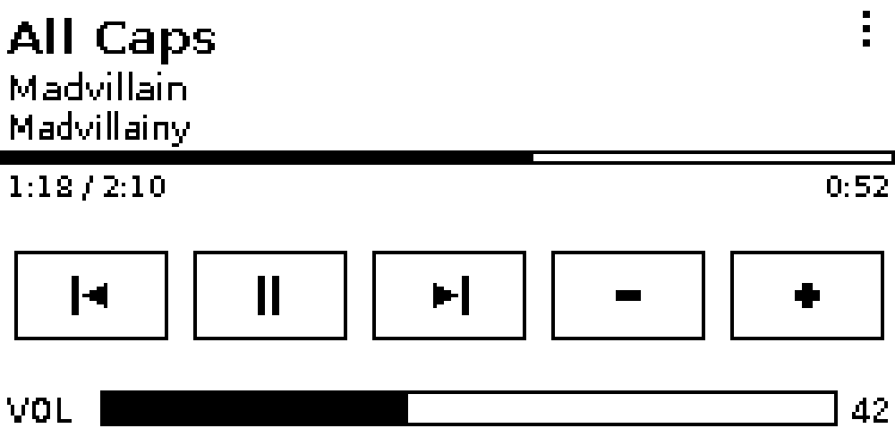
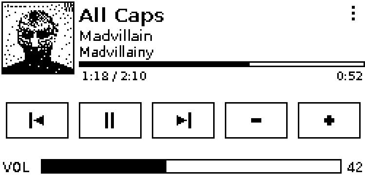
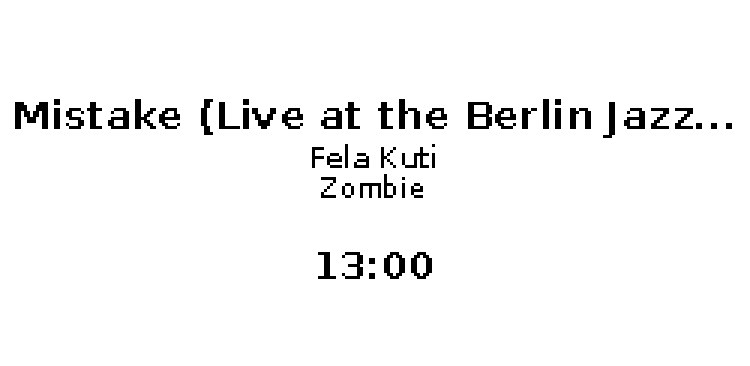
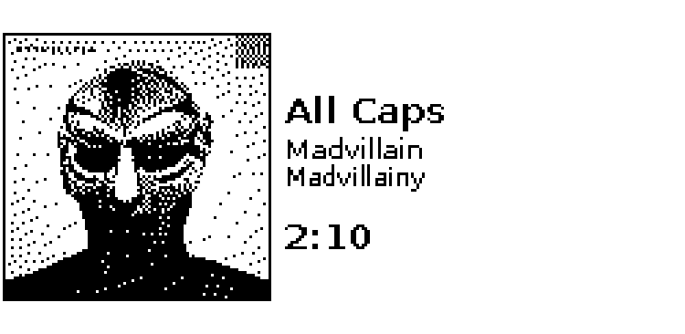
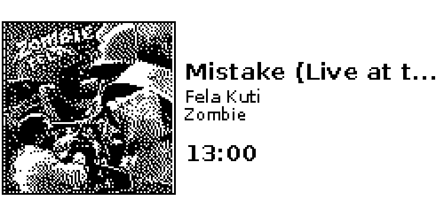
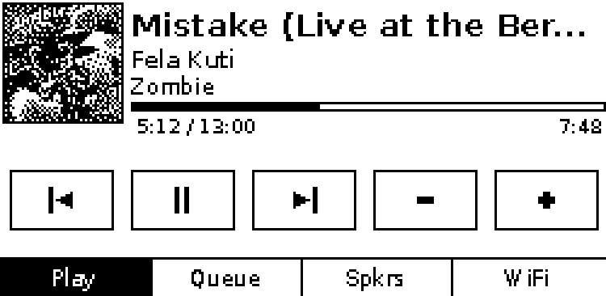
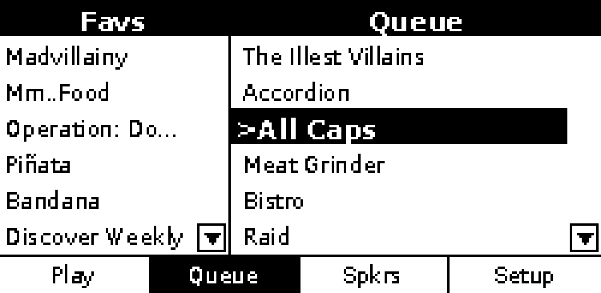
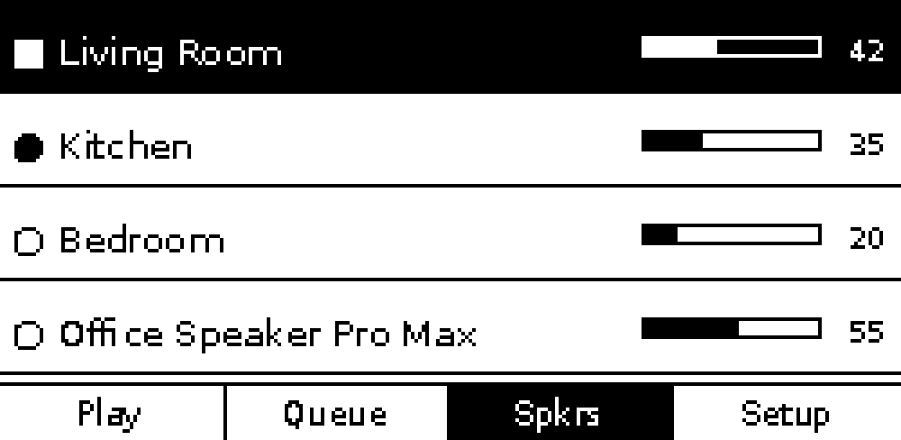
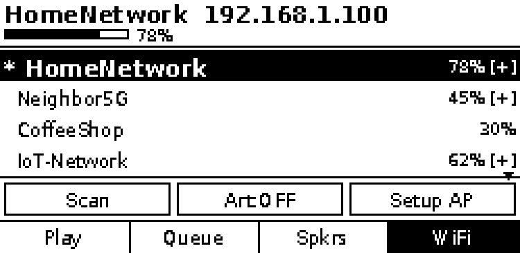
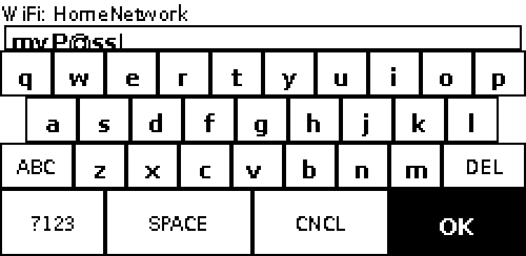

Features
Now Playing
See what's playing with track info, progress bar, and transport controls. Optionally show dithered album art.
Queue & Favourites
Browse your queue and Sonos favourites side by side. Tap to play.
Speaker Grouping
View all speakers on your network. Tap to switch or group them together.
WiFi Setup
Type passwords on the built-in keyboard, or use the captive portal from your phone.
Always On
The e-ink display holds its image with zero power. Only refreshes when something changes.
Runs on Boot
Install once, reboot, and it just works. Discovers your Sonos speakers automatically.
Screenshots
Rendered at native 250×122 resolution — exactly what the e-ink display shows.










Hardware
| Component | Details |
|---|---|
| SBC | Raspberry Pi Zero 2W, Zero W, 3B/3B+, 4B, or 5 — any model with a 40-pin GPIO header |
| Display | 2.13" Touch e-Paper HAT (Waveshare or compatible) — 250×122 px, B/W |
| Interface | SPI (EPD) + I2C (GT1151 touch) via 40-pin header |
| Connection | HAT form factor — plugs directly onto the GPIO header |
Get started
git clone https://github.com/stigf/sonos-remote-eink.git
cd sonos-remote-eink
sudo bash install.sh
sudo rebootThe service starts on boot and finds your Sonos speakers automatically.